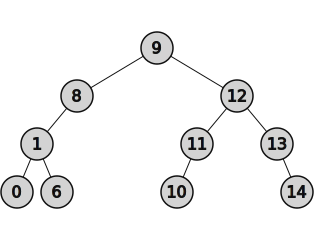
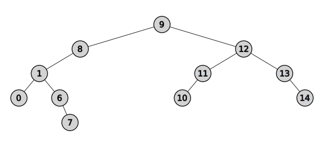

from binarytree import Node, tree
# On peut facilement créer un arbre aléatoire
mon_arbre = tree(height=3)
# L'affichage de l'arbre est aisé
print("Arbre aléatoire")
mon_arbre
Arbre aléatoire

Contenus
|
Capacités attendues
|
Commentaires
|
|---|---|---|
| Algorithmes sur les arbres binaires et sur les arbres binaires de recherche. | Calculer la taille et la hauteur d’un arbre. Parcourir un arbre de différentes façons (ordres infixe, préfixe ou suffixe ; ordre en largeur d’abord). Rechercher une clé dans un arbre de recherche, insérer une clé. |
Une structure de données récursive adaptée est utilisée. L’exemple des arbres permet d’illustrer la programmation par classe. La recherche dans un arbre de recherche équilibré est de coût logarithmique. |
Dans ce chapitre nous allons voir quelques algorithmes classiques sur les arbres:
Pour représenter les arbres, nous allons décrire l’arbre à partir d’une classe Node récursive avec les attributs suivants:
value: valeur ou clé du nœud de type numérique,left: sous-arbre gauche de type Node,right: sous-arbre droit de type Node,Cette structure de données est récursive car les attributes left et right de l’objet Node sont eux-mêmes de type Node.
La syntaxe utilisée est basée sur le package python binarytree ce qui à l’inconvénient d’être en anglais, mais qui nous permettra de programmer et tester facilement nos algorithmes en Python.
from binarytree import Node, tree
# On peut facilement créer un arbre aléatoire
mon_arbre = tree(height=3)
# L'affichage de l'arbre est aisé
print("Arbre aléatoire")
mon_arbre
Arbre aléatoire
# ou créer l'arbre de toutes pièces
arbre = Node(3)
arbre.left = Node(2)
arbre.left.left = Node(1)
arbre.left.right = Node(4)
arbre.left.right.right = Node(5)
arbre.right = Node(6)
print("A la main")
arbre
A la main
Pour rappel, voici la définition vue dans le chapitre P1C4 sur les arbres binaires.
La taille d’un arbre est son nombre de nœuds.
Nous allons utiliser une fonction recursive.
A chaque appel, on renvoie 1 + taille(gauche(A)) + taille(droite(A)).
Dans le cas de base, en cas d’absence de noeud, on renvoie 0.
Voici le pseudo-code correspondant à cette fonction:
taille(Arbre A) :
Si A vide
retourner 0
retourner 1 + taille(gauche(A)) + taille(droite(A))
Et voici l’implémentation de cette fonction en Python en utilisant la classe binarytree.Node pour représenter les arbres binaires.
def taille(arbre):
"""Fonction récursive renvoyant la taille d'un arbre
Arguments
---------
arbre: Arbre Binaire
Le noeud racine de l'arbre
Returns
-------
int
La taille de l'arbre
"""
# Cas de base
if not(arbre):
return 0
else:
# print(arbre)
return 1 + taille(arbre.left) + taille(arbre.right)
print("taille:", taille(mon_arbre))
mon_arbre
taille: 11

Pour rappel, voici la définition vue dans le chapitre P1C4 sur les arbres binaires.
La hauteur d’un arbre est la plus grande profondeur d’une feuille de l’arbre.
A chaque appel, on va renvoyer le maximum des hauteurs des sous-arbres: 1 + hauteur(node.left), hauteur(node.right)).
Mais comme toute fonction recursive, il faut un cas de base qui ne nécessite pas le rappel de la fonction(sans quoi on aurait une boucle infinie). Ce cas est l’absence de noeud, cela signifie que le noeud parent était une feuille, et renvoie -1 pour diminuer la hauteur accumulée de 1.
Voici le pseudo-code correspondant à cette fonction:
hauteur(Arbre A) :
Si A vide
retourner - 1
retourner 1 + max(hauteur(gauche(A)), hauteur(droite(A)))
Et voici l’implémentation de cette fonction en Python en utilisant la classe binarytree.Node pour représenter les arbres binaires.
def hauteur(arbre):
"""Fonction récursive renvoyant la hauteur d'un arbre
Arguments
---------
arbre: Arbre binaire
Le noeud racine de l'arbre
Returns
-------
int
La hauteur de l'arbre
"""
# Cas de base
if not(arbre):
return -1
else:
# print(arbre)
return 1 + max(hauteur(arbre.left), hauteur(arbre.right))
print("hauteur:", hauteur(mon_arbre))
mon_arbre
hauteur: 3

N’hésitez pas à décommenter le print pour observer les arbres sur lesquels sont appelés cette fonction.
Schématiser la pile d’appels de la fonction récursive utilisée pour obtenir ce résultat.
Nous allons voir quatre méthodes de parcours des arbres, en fonction de l’ordre dans lequel on parcourt les noeuds:

Dans cet ordre, chaque nœud est visité puis chacun de ses fils.
Voici le pseudo-code extrait de l’article Wikipedia sur les arbres.
parcours_préfixe(Arbre A) :
visiter (A)
Si nonVide (gauche(A))
parcours_préfixe(gauche(A))
Si nonVide (droite(A))
parcours_préfixe(droite(A))
On visite chaque nœud entre les nœuds de son sous-arbre de gauche et les nœuds de son sous-arbre de droite. C’est une manière assez commune de parcourir un arbre binaire de recherche, car il donne les valeurs dans l’ordre croissant.
Voici le pseudo-code extrait de l’article Wikipedia sur les arbres.
parcours_infixe(Arbre A) :
Si nonVide(gauche(A))
parcours_infixe(gauche(A))
visiter(A)
Si nonVide(droite(A))
parcours_infixe(droite(A))
On affiche chaque nœud après avoir affiché chacun de ses fils.
Voici le pseudo-code extrait de l’article Wikipedia sur les arbres.
parcours_postfixe(Arbre A) :
Si nonVide(gauche(A))
parcours_postfixe(gauche(A))
Si nonVide(droite(A))
parcours_postfixe(droite(A))
visiter(A)
On parcours les noeuds de gauche à droite étage par étage, comme si on «lisait» l’arbre.
Voici le pseudo-code issu de l’article Wikipedia sur les arbres.
Ce code n’est pas recusrif et a la particularité d’utiliser une structure de file avec les méthodes enfiler et défiler.
parcours_largeur(Arbre A)
f = FileVide
enfiler(Racine(A), f)
Tant que (f != FileVide)
nœud = defiler(f)
Visiter(nœud) // On fait une opération
Si (gauche(nœud) != null) Alors
enfiler(gauche(nœud), f)
Si (droite(nœud) != null) Alors
enfiler(droite(nœud), f)
Voici un exemple d’implémentation en Python utilisant une liste en guise de file avec les méthodes:
list.insert(0, el), pour enfiler l’élément à l’index 0.list.pop(), pour supprimer et renvoyer le dernier élément de la file(le défiler).def parcours_largeur(arbre):
f = []
f.insert(0, arbre)
while f:
noeud = f.pop()
print(noeud.value)
if noeud.left:
f.insert(0, noeud.left)
if noeud.right:
f.insert(0, noeud.right)
print("Parcours en largeur")
parcours_largeur(mon_arbre)
mon_arbre
Parcours en largeur
10
14
1
9
12
3
13
5
6
0
8
Comme nous l’avons vu dans le chapitre sur les arbres de la partie structure de données,
un arbre binaire de recherche permet des opérations rapides pour rechercher une clé, insérer ou supprimer une clé.
Pour rappel:
Il s’agit d’un arbre binaire dans lequel toutes les valeurs dans le sous-arbre gauche d’un nœud sont inférieures à la valeur à la racine de l’arbre et toutes les valeurs dans le sous-arbre droit d’un nœud sont supérieures ou égales à la valeur à la racine de l’arbre.
Nous allons voir les algorithmes permettant la recherche et l’insertion d’une clé.
Encore une fois nous utiliserons le package binarytree qui permet de facilementcréer des arbres binaires grâce à la fonction bst(binary search tree).
from binarytree import bst
abr = bst(height=3)
abr
Puisque ce type d’arbre est trié, nous pouvons utiliser une méthode de recherche dichotomique telle que nous l’avions vu en première.
On peut ainsi éliminer la moitié de l’arbre à chaque itération et la complexité est si l’arbre est équilibré.
Voici le pseudo code de cet algorithme.
fonction recherche(a: abr, clé: élément)
Si a vide
retourner Faux
Sinon
e = étiquette de a
Si e == clé
retourner Vrai
Sinon si e < clé
retourner recherche(gauche(a), clé)
Sinon
retourner recherche(droite(a), clé)
Implémenter cet algorithme en Python en utilisant le module binarytree.
L’insertion d’un nœud commence par une recherche : on cherche la clé du nœud à insérer ; lorsqu’on arrive à une feuille, on ajoute le nœud comme fils de la feuille en comparant sa clé à celle de la feuille : si elle est inférieure, le nouveau nœud sera à gauche ; sinon il sera à droite.
fonction insertion(a: ABR, clé: élément)
Si a vide
retourner ABR(clé, vide, vide)
Sinon
e = étiquette de a
Si e < clé
retourner ABR(e, insertion(gauche(a), clé), droite(a))
Sinon
retourner ABR(e, gauche(a), insertion(droite(a), clé))
On peut traduire cet algorithme en Python de cette façon:
def insertion(abr, clé):
"""Insertion de la clé dans l'arbre abr
Arguments
---------
abr: binarytree.Node
l'arbre dans lequel doit être inséré la clé
clé: Number
La cle à insérer
Returns
-------
binarytree.Node
l'arbre modifié
"""
if not(abr):
return Node(clé)
e = abr.value
if clé < e:
return Node(value=e,
left=insertion(abr.left, clé),
right=abr.right)
else:
return Node(value=e,
left=abr.left,
right=insertion(abr.right, clé))
print("Arbre initial")
abr = bst()
abr
Arbre initial

# Insertion de l'élément 7
abr2 = insertion(abr, 7)
abr2
